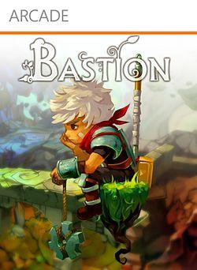
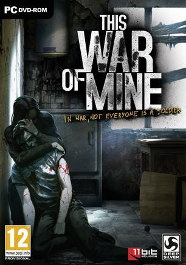
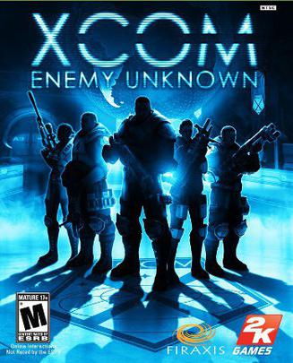
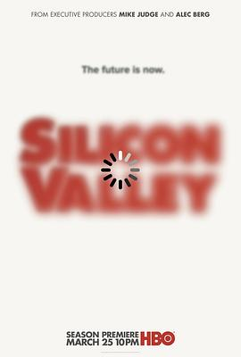
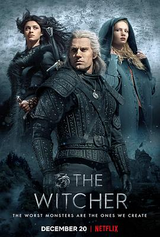

2018年9月
广播发布后不可编辑，所以每条都是那一刻的原话。
2018-09-27 22:23:59
玩过 古剑奇谭三：梦付千秋星垂野 ★★★★★
在玩试玩版，总体来说10个开发人员能把这么大的游戏开发出来，游戏性肯定不能指望太高，然后打击感比较弱，操作挺别手，不过好歹在做出改变，这个得点赞。另外风晴雪串起来了，点赞！
2018-09-23 19:37:22
 在看 西部世界 第一季 / Westworld Season 1
在看 西部世界 第一季 / Westworld Season 1
2018-09-23 19:35:53
玩过 少女们向荒野进发 少女たちは荒野を目指す ★★★☆☆
作为组长还是决定汉化弃坑了，这游戏小众得不得了，没人关注，文本还难懂，索性也就不汉化了，因此也就不打算玩了，体验版还是不错的，游戏引擎也还不错
2018-09-23 19:33:41

手残啊手残，某一关又长又无法通过又无法跳过的话，那就只能珍爱生命卸载游戏了，画面还是很完美的
2018-09-23 19:32:08
玩过 梦游者 Back to Bed ★★★☆☆
不知道从哪领的游戏，本来用linux没啥可以玩的就玩了一下，结果发现和零几年的flash小游戏《梦游先生》一样，很有怀旧感啊
2018-09-23 19:29:37

题材本身就很有深度了，有历史背景，然后玩法完全取决于玩家，导致OCD玩家无比纠结该怎么玩 =。=
2018-09-23 19:24:40
想玩 XCOM2：世界新秩序
2018-09-23 19:24:30

2018-09-20 21:22:07
 想看 硅谷 第六季 / Silicon Valley Season 6
想看 硅谷 第六季 / Silicon Valley Season 6
2018-09-20 21:21:49

FUCK… YEAH!
2018-09-20 19:50:31
在看 硅谷 第五季 / Silicon Valley Season 5
2018-09-18 14:56:55

2018-09-18 06:27:59
想看 纸钞屋 第一季 / La casa de papel Season 1
2018-09-17 22:05:41
2018-09-17 22:05:33
看过 与神同行：罪与罚 / 신과함께-죄와 벌 ★★★★★
一不小心在油管上看到了剧透，虽然已无兴致再看正片，但是仅凭剧透我觉得可以5星
2018-09-09 16:33:35
在玩 幽浮2 XCOM 2 ★★★★★
玩法和画面太棒了